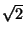
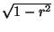
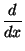
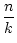

Solution 5.1:Since X is finite, the set
{xi  X | i = 0, 1, 2,...} is
itslef finite, and so there must be some pair i, j > 0 such that
xi = xi + j. Choose the least such i for which this holds, and then
choose the least such j. Then
xi + j + 1 =
X | i = 0, 1, 2,...} is
itslef finite, and so there must be some pair i, j > 0 such that
xi = xi + j. Choose the least such i for which this holds, and then
choose the least such j. Then
xi + j + 1 =  xi+j =
xi+j =  xi = x = i+1 etc and the sequence is periodic of period j starting at
xi.
xi = x = i+1 etc and the sequence is periodic of period j starting at
xi.
Solution 5.2:There are several ways of getting a point ``at random'' in T1; we look at them in turn. The most straightforward is to choose x = RAND and y = RAND, and then throw away the points not in T1. This has the disadvantage that we throw away half of the points chosen. A quicker method depends on the fact that the line y = x divides the square into two congruent triangles, and so accepts (x, y) if it lies in T1 and otherwise accepts the point (y, x), which necessarily lies in T1, if (x, y) does not (unless x = y, which we ignore, or throw away).
A third way can generalise a little more easily. First let
t = RAND, write
x =  , choose
y = RAND[0, x) and
choose the point (x, y). Clearly the chosen point lies in T1; we
have to show that this gives a random distribution. Given x, it is
clear that y is chosen with uniform probability; we must thus show
that x was chosen appropriately. In other words,
that the probability dp of choosing a point in a strip of width dx
at the point x is proportional to x dx, the area of the strip.
Thus
, choose
y = RAND[0, x) and
choose the point (x, y). Clearly the chosen point lies in T1; we
have to show that this gives a random distribution. Given x, it is
clear that y is chosen with uniform probability; we must thus show
that x was chosen appropriately. In other words,
that the probability dp of choosing a point in a strip of width dx
at the point x is proportional to x dx, the area of the strip.
Thus
It is clear that the same arguments apply to choosing a point in T2.
We now analyse ways of producing points in T3. It is clear that Method 1 produces points chosen at random in T3.
Method 2 is like Method 1, except that before the third call to
RAND(), a check is made that
(x, y)  T2, and the process
abandoned if it is not. Clearly we can ommit a call to
RAND() without affecting the outcome, if we know in advance
that nothing will be produced. Thus this method does produce
random points of T2.
T2, and the process
abandoned if it is not. Clearly we can ommit a call to
RAND() without affecting the outcome, if we know in advance
that nothing will be produced. Thus this method does produce
random points of T2.
Note that Method 3 and Method 4 are effectively the same, although
Method 4 is quicker; in each case, having picked (x, y) at random in
T2, we wait until some z with
0 z < 1 - x - y has been chosen
before making another choice of (x, y). In particular, we see that
the probability of a point lying in
z < 1 - x - y has been chosen
before making another choice of (x, y). In particular, we see that
the probability of a point lying in
Random points in T4: the triangle in question is equilateral, with side . We first show how to pick a point at random from the equilateral triangle T with vertices (- 1, 0), (0, 1) and (1, 0) whose side is of length 2, and then construct an affine map to the requierd triangle.
To choose a point at random in T, pick
x = RAND() and
y = 2*RAND(). If
(x, y)  T, accept it; otherwise choose
(- x, 2 - y)
T, accept it; otherwise choose
(- x, 2 - y)  T. This is essentially the same idea as in choosing a
point of T1.
T. This is essentially the same idea as in choosing a
point of T1.
There will be a unique affine map to T4. A calculation shows it is
A less efficient, and incorrect way picks x', y' and z'
using
RAND(), so necessarily equally distributed random
variables with
0 x', y', z' < 1, and then use variables
x', y', z' < 1, and then use variables
 , y =
, y =  , z =
, z = 
Solution 5.3:Assume the earth is a sphere of radius R, and that latitude and
longitude are chosen at random. The area in which the point can lie
if the latitude is between 0 and a very small angle
d is
approximately the area of a cylinder of radius R and height
R d
is
approximately the area of a cylinder of radius R and height
R d , and so has area
2
, and so has area
2 R2 d
R2 d . An equally
likely choice is that the latitude lies between
. An equally
likely choice is that the latitude lies between
 /2 - d
/2 - d and
and
 /2, in which case the chosen point lies in an approximately
circular arc of radius
R d
/2, in which case the chosen point lies in an approximately
circular arc of radius
R d , with area
, with area
 R2(d
R2(d )2. Theses are very different; thus the choice
thus does not lead to an equal probability of choosing points near the
pole, and near the equator.
)2. Theses are very different; thus the choice
thus does not lead to an equal probability of choosing points near the
pole, and near the equator.
An easy way to choose points from the ball
x2 + y2 + z2 1 is
to choose each of x, y and z from
RAND(- 1, 1) and then
reject points which do not satisfy
x2 + y2 + z2
1 is
to choose each of x, y and z from
RAND(- 1, 1) and then
reject points which do not satisfy
x2 + y2 + z2 1. The
probability of acceptance is then the ratio of the volume of the
sphere of radius 1 to the volume of the enclosing cube of side 2.
This is 4
1. The
probability of acceptance is then the ratio of the volume of the
sphere of radius 1 to the volume of the enclosing cube of side 2.
This is 4 /3 to 8, or 0.52. Points on the sphere can
be chosen by first picking a point in the ball, and then projecting
onto the sphere.
/3 to 8, or 0.52. Points on the sphere can
be chosen by first picking a point in the ball, and then projecting
onto the sphere.
Alternatively, we can choose longitude from
RAND[0, 2 ), and
latitude from a distribution which reflects the resulting areas. for
simplicity we choose a point at random in the northern hemisphere of a
sphere of radius 1, and indicate at the end how the idea can be
modified. Let
), and
latitude from a distribution which reflects the resulting areas. for
simplicity we choose a point at random in the northern hemisphere of a
sphere of radius 1, and indicate at the end how the idea can be
modified. Let
 = 2
= 2 *RAND(), choose
x = RAND(), and let
*RAND(), choose
x = RAND(), and let
To this end recall the classical result, which can also be easily
proved using calculus, that the area of a spherical cap is the same as
the area of a cylinder of the same radius as the sphere whose height
is the height of the cap. The area of that portion of the unit
hemisphere which sits above the annulus
0 a < r < b
a < r < b 1 is
thus
1 is
thus
Let g(r) = 1 - , so g(r) = x, and f and g are inverse functions. Computing probabilities,
| Pr(a < r < b) | = Pr(g(a) < g(r) < g(b)) since g is monotone, | |
| = Pr1 - |
||
| = |
To map to the whole sphere, choose x at random from [-1,1); then use the sign of x to determine whether to go to the northern or southern hemispheres, and | x| in place of x to determine r.
Solution 5.4:Let the matrix A have entries aij for
1 i, j
i, j n. For
i
n. For
i j define
aij = 2*RAND - 1, and let
aij = aji if i < j. Clearly A is symmetric, while each entry is
uniformly distributed on [- 1, 1); to avoid the possibility of getting
-1 as an entry, simply make another selection using the random
number generator should it be chosen.
j define
aij = 2*RAND - 1, and let
aij = aji if i < j. Clearly A is symmetric, while each entry is
uniformly distributed on [- 1, 1); to avoid the possibility of getting
-1 as an entry, simply make another selection using the random
number generator should it be chosen.
Solution 5.5:No solution offered.
Solution 5.6:Assume we have chosen k - 1 items in the way described, and are trying to choose the kth such item. We are successful at the first choice if any of the remaining n - k + 1 items are chosen; this occurs with probability (n - k + 1)/n. In the same way, we need two choices if we fail at the first attempt (probability (k - 1)/n), and succeed at the second (probability (n - k + 1)/n as before); thus with total probability
| 1 + 2x + 3x2 + ... | = (1 + x + x2 + ... ) if | x| < 1, | |
| = (1 - x)-1 = (1 - x)-2 if | x| < 1, |
As in the question, this then gives
|
and using the approximation Hn log(n),
| |||
 |
= Hn - Hn - k |
= |
|
Solution 5.7:
a) We give the pseudocode for the Running Sample algorithm in
Fig. 
The logic of this method is that if, at the ith item, we have so far chosen j items then we have k - j items left to choose from the remaining N - i + 1 items (including the ith). So it seems reasonable to choose the ith item with probability
We cannot end up with more than k items because we stop the loop if we have got k. It is thus enough to show that we cannot end up with fewer than k. Suppose conversely that we had ended up with j < k items and that the last item not chosen was the ith. Then, at that stage, we had already chosen j - (N - i) items. So the probability of choosing the ith was
b)
Our algorithm identifies the half of the equilateral triangle to the
left of the x - axis with the remaining half of the square
The pair (x, y) are chosen uniformly from a rectangle with the same area as the given triangle. Our algorithm aranges to use all the points produced, while the transformation which maps the part of the square outside the equilateral triangle to the ``missing'' part of the triangle is Euclidean and hence preserves areas.